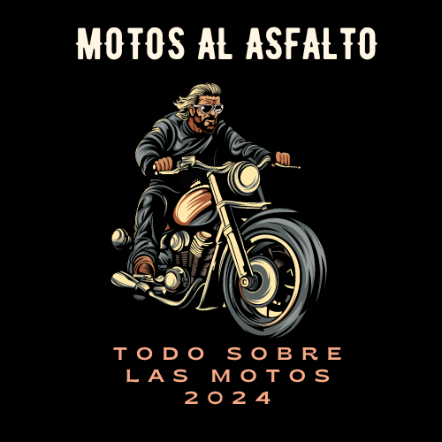
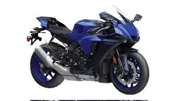

- 1.Potencia increíble: La H2R es conocida por su impresionante potencia.
Está equipada con un motor sobrealimentado de cuatro tiempos y cuatro cilindros en línea,
con una capacidad de 998 cc, capaz de producir más de 300 caballos de fuerza.
- 2.Diseño aerodinámico: Su diseño está pensado para la máxima aerodinámica,
lo que le permite alcanzar velocidades extremadamente altas.
- 3.Tecnología de sobrealimentación: característica más destacada de la H2R es su tecnología de sobrealimentación.
Utiliza un compresor centrífugo para forzar más aire hacia el motor, lo que aumenta significativamente su potencia en comparación
con los motores convencionales.
- 4.Ligereza:pesar de su potencia, la H2R es sorprendentemente ligera,
gracias al uso extensivo de materiales como el aluminio y la fibra de carbono en su construcción.
- 5.Prestaciones de pista:La H2R está diseñada principalmente para su uso en pista,
con características como un chasis de competición, suspensiones ajustables y frenos de alto rendimiento.
- 6.Edición limitada: a su naturaleza de alta gama y su tecnología avanzada,
la H2R se produce en cantidades limitadas y suele ser una motocicleta exclusiva y altamente deseada por los entusiastas
de las motos de alto rendimiento.
- En resumen, la Kawasaki Ninja H2R es una motocicleta impresionante que combina tecnología de vanguardia,
diseño aerodinámico y una potencia excepcional para ofrecer una experiencia de conducción emocionante y
de alto rendimiento.
- Motor:Refrigeración líquida, 4 tiempos, cuatro en línea, DOHC, 16 válvulas
- Cilindrada:998 cc
- Diámetro por carrera: 76,0 x 55,0 mm
- Relación de compresión: 8.3:1
- Par motor máximo: 164,7 Nm a 12 500 rpm
- Sistema de combustible: DFI® con cuerpos de mariposa de 50 mm (4) con doble inyección; Supercargador Kawasaki
- Encendido: Digital
- Transmisión: 6 velocidades, retorno, dog-ring
- Transmisión final: Cadena sellada
- Asistencia electrónica para el piloto: Función de Gestión de Curvas Kawasaki (KCMF), Control de Tracción Kawasaki (KTRC), Modo de Control de Salida Kawasaki (KLCM), Sistema Inteligente de Frenos Antibloqueo Kawasaki (KIBS), Control del Freno de Motor Kawasaki (KEBC), Cambio Rápido Kawasaki (KQS) (cambio ascendente y descendente), Amortiguador de Dirección Electrónico Öhlins
- Suspensión delantera:/recorrido del neumático 43mm inverted fork with adjustable rebound and compression damping, spring preload adjustability and top-out springs/4.7 in
- Suspensión trasera:/recorrido del neumático Uni-Trak®, Öhlins TTX36 gas charged shock with piggyback reservoir, 24-way compression and rebound damping and adjustability and hand-turn spring preload adjustability, and top-outspring/5.3 in
- Neumático delantero: 120/70 ZR17 (58W)
- Neumático trasero: 200/55 ZR17 (78W)
- Frenos delanteros: Dual radial-mount, opposed 4-piston Brembo Stylema® calipers, dual semi-floating 330mm discs, KIBS ABS
- Frenos traseros: Opposed 2-piston calipers, single 250mm disc, KIBS ABS
- Tipo de chasis: Trellis, high-tensile steel, with swingarm mounting plate
- Ángulo de dirección:/Avance 24.5°/4.1 in
- Largo total: 82.1 in
- Ancho total: 30.3 in
- Altura total: 44.3 in
- Distancia al suelo 5.1 in
- Altura del asiento: 32.5 in
- Peso en orden de marcha: 524.8 lb*
- Depósito de combustible: 4.5 gal
- Distancia entre ejes 57.3 in
- Características especiales: Rideology the App Smartphone Connectivity, all-LED lighting, Highly Durable Paint, TFT Instrumentation
- Colores disponibles: Mirror Coated Spark Black
- Garantía: 12 Month Limited Warranty
ver algo